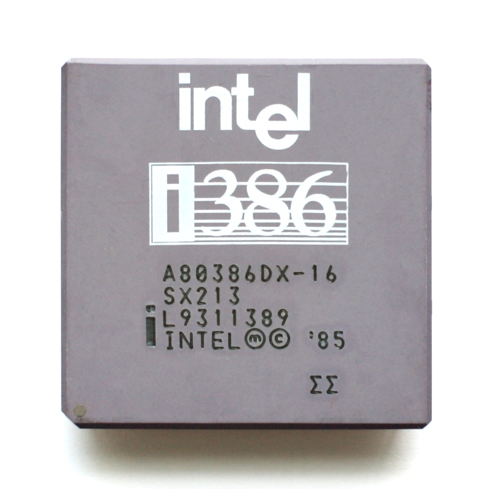
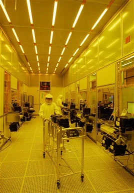
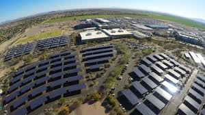
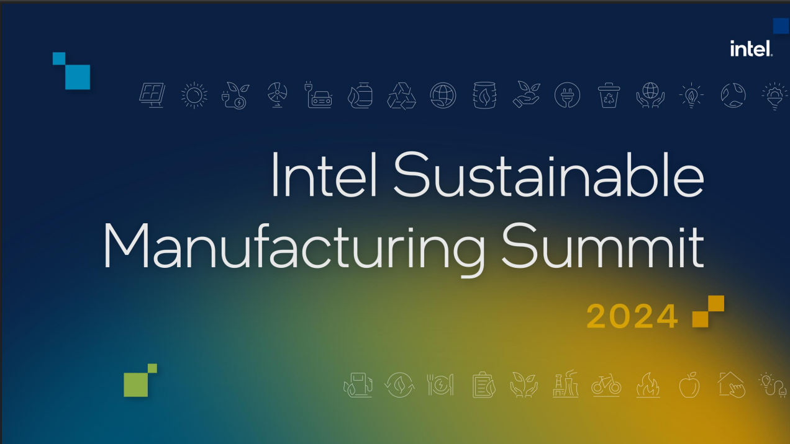

Corporate Responsibility Is the Foundation of Our Business
At Intel, corporate responsibility and innovation go hand in hand. For decades, we have set ambitious sustainability goals and embedded ethical practices across our global operations.
Explore Intel's journey through time, discovering how our commitment to innovation has shaped a more sustainable future for technology and our planet.
Hover over cards to learn more!







